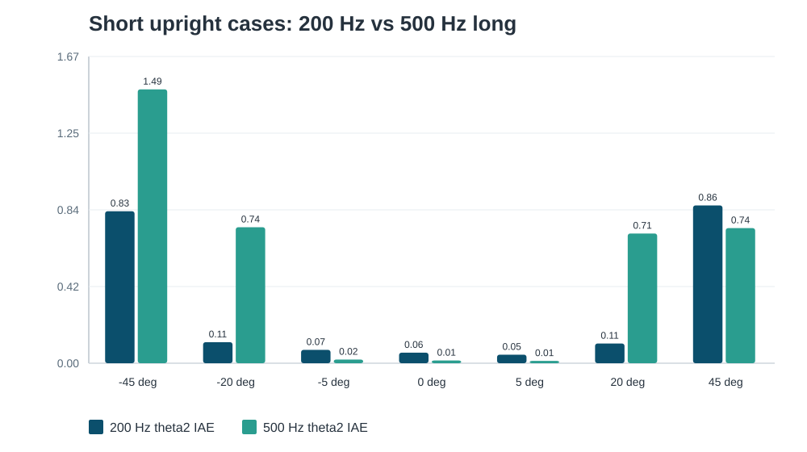
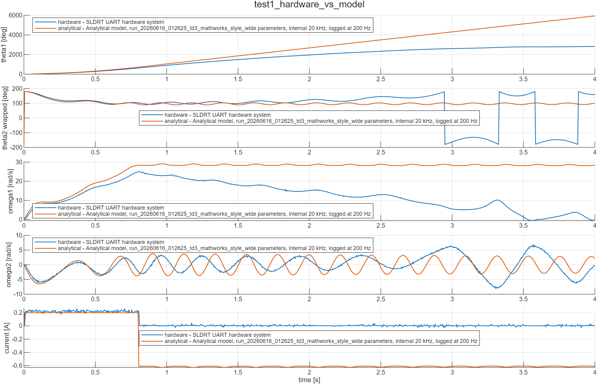
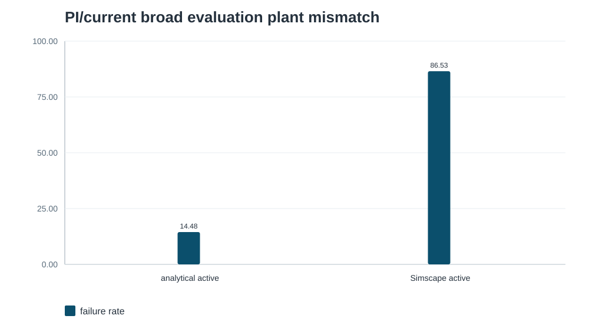

- The 500 Hz PI/current policy ran on real hardware and attempted lift-up.
- That means wrapping, signs, scaling, and gross dynamics are plausibly correct.
- The painful part is upright jitter/current chatter and model mismatch.
- We need guidance on reward tuning, domain randomization, residual dynamics, and safe hardware learning.
Profile fit
ZHAW School of Engineering, Scientific Computing and Algorithmics. Listed foci: Machine Learning, Optimization, Visual Computing.
Project fit
Current listed projects include Raman process analytics and Target Recognition using AI. Past projects include Bayesian online regression on embedded systems.
Source: ZHAW profile for Dr. Thomas Oskar Weinmann, accessed 2026-06-23.
Observation
sin/cos(theta1), sin/cos(theta2), omega1, omega2, previousAction.
Sine/cosine avoids feeding the wrapped angle discontinuity directly into the network.
Action path
a_rl in [-1,1] maps to current command, then SLDRT/UART, then uC current PI loop.
For deployment: actor only. Critics are training-only.
Twin critics
Reduce over-optimistic value estimates.
Delayed actor
Actor updates slower than critics for stability.
Target smoothing
Noise in target action discourages brittle sharp policies.
Reasonable story: TD3 is a practical continuous-action baseline, not magic. Fixed evaluation is where we judge it.
- Reward scale and survival terms were likely not guiding the right behavior.
- Curriculum/replay changes may have made critic learning inconsistent.
- Training reward was too easy to misread without fixed evaluation.
- Actuator interface and active plant path were not isolated clearly enough early on.
Interpretation: the controller can swing up and stabilize many cases, but broad robustness and arm management are not solved.
| Metric | 200 Hz short | 500 Hz long short |
|---|---|---|
| Failure rate | 0% | 0% |
| Mean final theta2 MAE | 0.346 deg | 0.000004 deg |
| Mean theta2 IAE | 0.298 | 0.532 |
| Mean action diff RMS | not in old summary | 0.030 |
| Mean action end osc freq | not in old summary | 85.8 Hz |
The final simulated angle is excellent, but effort/transient metrics and hardware jitter make it look more aggressive.

- 200 Hz run has full 297-case evaluation.
- 500 Hz long run has 7-case short eval plus a debug subset.
- Matching full-grid evidence for the 500 Hz long run is still missing from committed results.
- Good phrasing: “hardware transfer is encouraging; full robustness remains to be evaluated.”


This argues for careful plant/interface validation before claiming robustness.
- Reward does not make tiny oscillation/current chatter expensive enough.
- Policy learned to use high authority or saturation near upright.
- Real friction, stiction, dead zone, and current-loop dynamics are mismatched.
- Current scaling/clamping helped on hardware, so train those constraints instead of only patching deployment.
1. Randomize
Friction, damping, current scale, delay, low-pass, dead zone, encoder noise/offset.
2. Log hardware
Use disturbed enable/disable logs as validation and ID data first.
3. Residual later
Learn model residuals only after clean synchronized data and repeatable mismatch.
- How should we tune reward scale and near-upright smoothing?
- How detailed should the simulator be before more RL training?
- Domain randomization, residual dynamics, or hardware fine-tuning first?
- How can we add practical control guarantees or a safety filter?
- What hardware-learning strategy would he trust on this system?